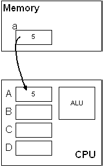
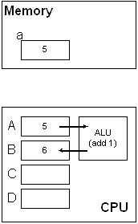
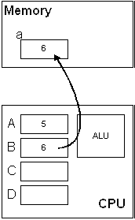

Expressions
In C, expressions are used to calculate some value. The simplest expressions are constants and variables. There is practically no limit to how complex an expression can be.Examples:
i 5 3.1415 a + b rate * time x * (a + b / 7.0) - value / y x*(a+b/7.0)-value/y x *(a+ b/ 7.0)- value / y sqrt(25.8) + b * abs(c)
Simple arithmetic unary operators:-i +5 a + b rate * time
Some simple arithmetic binary operators:
Unary operator Meaning + Positive (redundant) - Negation
With the exception of the modulus operator, all other operators above can work with integral (whole numbers) and floating point types. The modulus operator can only be used with integral types.
Binary operator Meaning + Add - Subtract * Multiply / Divide % Modulo
(Remainder)
Precedence and Associativity
Just as in mathematics, all operators have a certain precedence. Simply put, when more than one operator is used in an expression, precedence determines which one gets evaluated first.
When two or more operators with the same precedence are used in an expression, you must look at the operator's associativity to determine the order of evaluation. The order is either left-to-right (L-R) or right-to-left (R-L).3 + 4 * 2 is 11 and is the same as 3 + (4 * 2), although the parentheses are redundant (3 + 4) * 2 is 14 -4 + 7 is 3 and is the same as (-4) + 7, although the parentheses are redundant -(4 + 7) is -11
This precedence chart shows that there are quite a few different levels of precedence within the C operators. Each division (separated by a horizontal line -----) is a different precedence level.3 + 4 + 2 is 9 and is the same as (3 + 4) + 2 3 * 4 * 2 is 24 and is the same as (3 * 4) * 2 2 * 6 / 4 is 3 and is the same as (2 * 6) / 4 2 * (6 / 4) is 2
Assignment Operators
The assignment operator is very common. There are simple assignments and compound assignments.Simple assignment statements:
Note that the = operator is assignment, not equality (which is ==, by the way).a = 1; b = 2; a = b; a = 3 * b; a = 4 - 3 * b / 8;
Examples:
The assignment operator is unique compared to the arithmetic operators we've seen so far:int i; /* i holds an undefined value */ double d; /* d holds an undefined value */ i = 10; /* i now holds the value 10 */ i = 12.8; /* i now holds the value 12 */ d = 10; /* d now holds the value 10.0 */ d = 12.8; /* d now holds the value 12.8 */
Because of the associativity of the assignment operator, we can do this:int a, b, c; /* all are undefined */ b = 5; /* b is now 5 */ c = 10; /* c is now 10 */ a = b + c; /* a is now 15, b and c are unchanged */ a = b * c; /* a is now 50, b and c are unchanged */
This is the same as this:a = b = c = 5; /* all are now 5 */
Note that this is very different (and is illegal):a = (b = (c = 5)); /* all are now 5 */
This is because the assignment operator requires an l-value, so we can store a value. These are illegal as well:((a = b) = c) = 5; /* This is not legal C code */
Remember, this is assignment not equality. (The value on the left side is changing.)10 = 5; /* Illegal */ 10 = a; /* Illegal */ a + b = 8; /* Illegal */ 10 = 10; /* Illegal */
These can be done more succinctly with compound assignment operators or arithmetic assignment operators:/* get the current value of a, add 5 to it, */ /* and put the new value back into a */ a = a + 5; /* get the current value of b, subtract 6 from it, */ /* and put the new value back into b */ b = b - 6;
Note that += and -= are single tokens. You cannot insert a space. There is also a *= operator and a /= operator. (There are several more, which we'll see later.)/* get the current value of a, add 5 to it, */ /* and put the new value back into a */ a += 5; /* get the current value of b, subtract 6 from it, */ /* and put the new value back into b */ b -= 6;
These three assignment expressions are similar:
Pre-increment Post-increment Pre-decrement Post-decrement ++i i++ --i i--
There is an important but subtle difference between the prefix and postfix versions of the increment/decrement operators which causes the above to be not quite true. In other words, the value of these expressions are the same:
Assignment Compound Assignment Increment/Decrement a = a + 1 a += 1 a++
++aa = a - 1 a -= 1 a--
--a
Notice the missing a++ expression. This means that if you displayed these expressions using printf, you'd see:a = a + 1 a += 1 ++a
a = 5;
printf("value is %i\n", a = a + 1); /* value is 6 */
a = 5;
printf("value is %i\n", a += 1); /* value is 6 */
a = 5;
printf("value is %i\n", ++a); /* value is 6 */
a = 5;
printf("value is %i\n", a++); /* value is 5 */
a = a + 1; a += 1; ++a; a++;
More examples: Assuming that a is an integer:
Looking closer, this statement:
Statements Output a = 5; printf("The value of a is %i\n", ++a); printf("The value of a is %i\n", a);a = 5; printf("The value of a is %i\n", a++); printf("The value of a is %i\n", a);a = 5; printf("The value of a is %i\n", --a); printf("The value of a is %i\n", a);a = 5; printf("The value of a is %i\n", a--); printf("The value of a is %i\n", a);
is equivalent to these statements:c = a++ + ++b;
Look closely at the expressions below to determine the output:b = b + 1; c = a + b; a = a + 1;
The statement below modifies the values of a, b, and c:
Statements Output a = 5; b = 3; c = a++ + b++; printf("a = %i, b = %i, c = %i\n", a, b, c);a = 5; b = 3; c = ++a + b++; printf("a = %i, b = %i, c = %i\n", a, b, c);a = 5; b = 3; c = a++ + ++b; printf("a = %i, b = %i, c = %i\n", a, b, c);a = 5; b = 3; c = ++a + ++b; printf("a = %i, b = %i, c = %i\n", a, b, c);
Remember, to modify a variable means to change the value that is stored at the memory location represented by the variable. Graphically, a++ would look (simplified) something like this:c = a++ + ++b;
Fetch value from memory Increment the value by 1 Store the new value in memory   
Notice that there is a time when both the old value and the new value exist. This is key to understanding the increment/decrement operators.
Order of Evaluation
Example expressions:In the compound expressions above, there are actually several subexpressions in each. In this expression:int w = 1; int x = 2; int y = 3; int z = 4; int r; r = w * x + y * z; /* 1. same as: (w * x) + (y * z) */ r = w + x * y + z; /* 2. same as: w + (x * y) + z */ r = (w + x) * (y + z); /* 3. only way to write this */
r = w * x + y * z /* 1. same as: (w * x) + (y * z) */
can be evaluated in a multitude of ways, the result will always be the same: 14r = w * x + y * z; /* 1. same as: (w * x) + (y * z) */
Notes:
Side-effects in Expressions
Anytime an operator causes a value in memory to change, it is called a side-effect operator. The most obvious side-effect operator is the assignment operator:However, this statement is actually performing three assignments:e = a * b + c * d; /* Changes the value stored at e */
After the statement completely executes, e, a, and b will have different values.e = a++ * b++; /* 3 modifications */
This is problematic, though:
Since a is used twice, it will be evaluated twice. And, depending on when the increment to a occurs, the result will be different:e = a++ * a; /* dangerous code! */
In fact, the GNU gcc compiler will actually warn you about it:a = 2; e = a++ * a; /* e is either 4 or 6 */
Here's a nasty example of undefined code:warning: operation on 'a' may be undefined
#include <stdio.h>
int main(void)
{
int a = 5;
a = a-- - --a * (a = -3) * a++ + ++a;
printf("a = %i\n", a);
return 0;
}
Fortunately, the GNU compiler will warn you about this:
Compiler Output GNU gcc Clang Microsoft Borland
Some side-effect operators:main.c: In function `main': main.c:6: warning: operation on `a' may be undefined main.c:6: warning: operation on `a' may be undefined main.c:6: warning: operation on `a' may be undefined main.c:6: warning: operation on `a' may be undefined main.c:6: warning: operation on `a' may be undefined
There are 4 side-effect operators in this completely valid expression: (How many tokens are in the expression?)= += -= *= /= ++ (pre/post increment) -- (pre/post decrement)
What will be printed by this code? The first thing you should do is identify which variables are going to have their values changed. You'll definitely want to refer to the precedence chart.a = b += c++ - d + --e / -f
int a = 1;
int b = 2;
int c = 3;
int d = 4;
int e = 5;
int f = 6;
a = b += c++ - d + --e / -f;
printf("a = %i, b = %i, c = %i, d = %i, e = %i, f = %i\n", a, b, c, d, e, f);
Given this code:
Which value is fetched from memory first? (Compiler-dependent)int x = a * b + c * d + e * f;
There are rules that dictate precedence and associativity, but there may still be ambiguity (due to side-effect operations).
More complex example (with visible side-effects):
int PrintAndReturn(int value)
{
printf("%i\n", value);
return value;
}
int main(void)
{
int x, y;
x = PrintAndReturn(1) + PrintAndReturn(2) + PrintAndReturn(3);
printf("x = %i\n", x);
y = PrintAndReturn(1) + PrintAndReturn(2) * PrintAndReturn(3);
printf("y = %i\n", y);
return 0;
}
GNU MS Borland 1 1 1 2 2 2 3 3 3 x = 6 x = 6 x = 6 1 1 2 2 2 3 3 3 1 y = 7 y = 7 y = 7